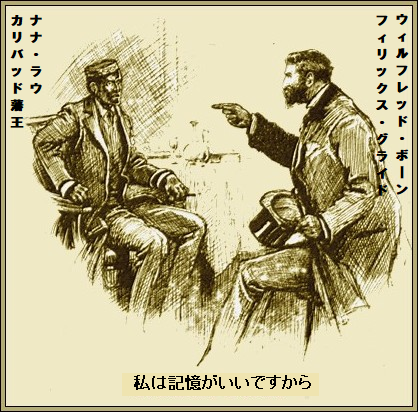
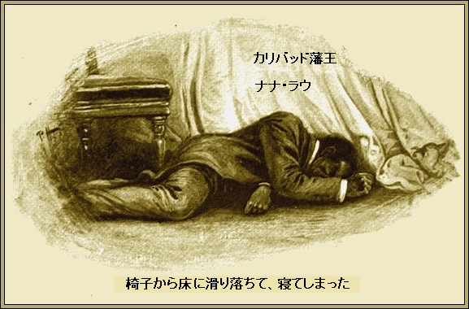
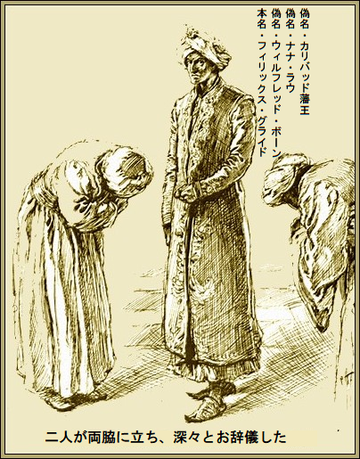
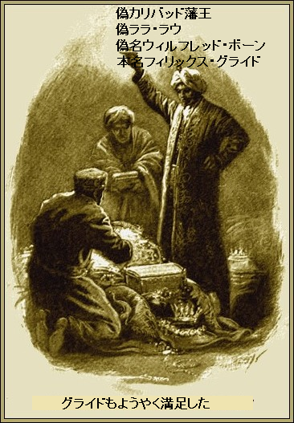

第一章
カリバッドの
道徳なんて藩王にはない。今までどんな場合も必要なかった。でも金持ちだからインド商会は、ちやほやした。
インド商会の目下の関心は、この高名な藩王からの分け前、例えば領土とか、人夫とか、ダイヤモンドだ。だからウィンザー城で会って、話を詰める算段だった。
一方の浅黒い藩王は片目でウィンク。局面の情勢は十分承知の上だ。なにしろ、カリバッドに専用演芸場まで持っている身だから。
ちなみにこのナナ・ラウ藩王以上にひどい悪党はこの世に存在しないと言ってもよかろう。若い頃の経歴を知る者はほとんどいない。完璧な英語を話し、競走馬血統の知識は通り一遍じゃない。
ナナ・ラウ藩王が一人で夕食を食べ終えた。二本目の煙草に火をつけた時、召使いが入室して告げた。
「お客様が下でお待ちでございます」
珍しく寛大に、藩王が目通しを許した。
客人がはいり、お辞儀して、扉を閉めた。
「殿下、私はウィルフレッド・ボーンと申します」
藩王がこっくり。好印象を与えた。洗練された服のためだ。
「ボーン君、座って。煙草をどうぞ。それで、用件は」
「恐縮でございます。さすが東洋の藩王でいらっしゃる。こんな立派な
「ずいぶんむかし、二十年前だからなあ」
とナナ・ラウが不安げに答えた。
事実、不安だった。ナナ・ラウが以前オクスフォードにいたなんてことを、インド商会が知ったら驚くだろう。でも当時はナナ・ラウという名前じゃなかったし、四人の善人がカリバッド・ダイヤを管理していた。
そして、たまたま事件がオクスフォードで起こり、緊急処理され、無縁墓に埋められ、その上に花々を咲かせて、白い墓石もなく、忘れ去られた。しかし今、もしこの話を蒸し返せば、ナナ・ラウはカリバッドの王座からたちまち滑り落ちること必定だ。
ボーンがもったいぶって、言った。
「二十年て、どうってことないです。私は記憶がいいですから」

「たしかキミは下院のボーン議員だな。何を覚えている？」
ボーンが笑いながら答えた。
「そうですね、例の
ナナ・ラウが平静を取り戻した。薄い唇のピクピクが止まった。これはゆすりだと察した。藩王が語気を強めた。
「キミ、いくらだ？」
「さすがに勘が鋭いですね。あなた程の東洋詩人はいません。とにかく、お金じゃないですよ、つまり……。詳しくは話せないのですが、簡潔に言いましょう。私は優位な立場にあります。私がひとことふたこと言えば、殿下の君主の座と支配権は無くなります。当然お分かりでしょう。私が欲しいものは明白です。あしたウィンザー城の晩餐会を欠席してもらいたいのです」
ナナ・ラウが提案を一笑に付した。
「バカな、そんなことはしない」
「通常ならしません。でもそうじゃないですよ。出席は単なる儀式。貴国に大事は起きません。お城で食事して、翌朝ここへ戻られる。行事は私同様よくご存じでいらっしゃる」
「実は行きたくないんだ。確かに退屈だ。もしもだな、私の評判を落とさず、解決してくれれば……」
ボーンが言葉をさえぎった。
「もちろん、用意周到ですよ。殿下は明日午後六時頃までパディントン駅を出発なさいません。この名刺に私の住所が書いてあります。エプソム郊外です。ご足労ですが明日いらして昼食しましょう。衣装やら荷物やら全部持ってきてください。そして時間に間に合うよう、確実に馬車でパディントン駅までお送りします」
「コックのほか侍従は二人しかおらん」
「ええ、益々けっこうです。ではいらっしゃいますね」
「ああ、問題ない。行くよ」
＊
数分後、ウィルフレッド・ボーン、別名フィリックス・グライドはピカデリーを静かに歩いていた。ソーヤ喫茶店に入った。
そこで共犯の一味が待っており、一緒に食事した。奴らを手先に使い、最後に切り捨てるつもりだ。
グライドがビスク皿の上に覆いかぶさって説明した。
「うまくいった。ナナ・ラウはオクスフォードにいた二十年前と同じ男だ。アスコットで
「来ますかね？」
と第二共犯者が尋ねた。
「原案のままですか」
と第三共犯者。
「計画通りだ。お前らは細部をよく見とけ。俺はあした昼食まで忙しいから。いいか、よく冷えた昼食を現地の配膳係に完璧に並べさせ、代金を払え。それから鍵をかけねばならないから、家を出るとき、じかに家主代理人に知らせるように。馬車を午後三時半きっかりに呼んで、御者に金を払え。代理人に六か月賃貸し物件をいま借りたばかりだと言え。実際そうだから。そして職業紹介所へ行って召使いを求人しろ。十二人募集して、適当な日に執事が面接すると言え。各人の衣服は変装する時機が来るまで、今のままだ」
こと変装技術に関する限り、グライドに並ぶ者はいない。そばを知り合いが通っても気がつかないほどだ。
共犯者の一人が言った。
「了解。でも、もし城にナナ・ラウの知り合いがいたら？」
「それはない。藩王を
二人の手下は読んだと文句を言った。
「よろしい。それなら言うことない。城では手っ取り早くお宝を見つけて分捕るように、苦労したんだから。それから藩王の侍従として雑事を行うのだぞ。もたもたするんじゃないぞ」
グライドが用件を片づけると、皆立ち上がった。通りで分かれ、別々に散った。それから早々と真面目に床に就いた。まさに明日、大仕事を行うにふさわしい男どもであった。総じて、カリバッド藩王ナナ・ラウよりたっぷり寝た。
第二章
相当悪い予感を持ちながら、翌朝ナナ・ラウが二人の浅黒い侍従を伴い、エプソムまで南下した。
晩餐会にしてはおっそろしく大量の荷物だった。目もくらむ豪華な東洋衣装は西洋衣服の
一つのことにナナ・ラウはこだわった。何事があってもボーンの手に乗るまい、もしボーンが七面倒くさいことをうまくさばいてくれなければ拒否する。当然、藩王は自分を守りたいし、ひどい陰謀があっても無実の被害者だという確証がなければ、何事も承知しない。
インド人一行は招待されたボーンの邸宅へやっと着いた。玄関の所でボーンが出迎えた。
「
ボーン、いやグライドがベルを激しく鳴らすと、やがて二人の召使いが息を切らして現れた。派手な格好の男たちで、制服は全く申し分なかった。勘の鋭い読者なら、これら給仕たちの正体を察しよう。
「お前ら何をしていたんだ」
とグライドが
一人が
「旦那さま、新しい料理にかかりっきりで、女給がのんだくれで……」
グライドが言葉をさえぎった。
「そんなことは聞きたくない。藩王とお付きをお部屋へ案内して、ご接待しろ。昼食の準備はできているか」
「もう食堂でお待ちしております」
しばらくしてナナ・ラウと従者、それにグライドが着席して、
選び抜かれたシャンパンのせいで、ウィンザーへの招待はどうでもよくなった。そして実際、たしなみが無いと思われたのは、ボーンほどの食通にあらがうことだった。
全く完璧だった。昼食は芸術の域だ。ワインはまるでカメオ細工、二人の共犯者が行う給仕はこれ以上望むべくもない。
現代バビロンの詩的言葉で言えば、ナナ・ラウは小魚の一丁上がり。つまり昔風に言えば、三升の大酒飲み。だから、宮廷行事の前にアルコールをがぶがぶ飲ませるのは、ほとんど犯罪行為だ。
「別に行かなくても？ ここに泊まって、一晩楽しく過ごされては」
こうグライドが
ナナ・ラウが激しく反論した。
「くだらんことを言うな。断れないことはキミも分かってるだろ」
「ですが、私が殿下の代わりをするように整えました」
「おっ、お遊びか。外交をペテンにかける気だな。私だけに手の内を見せてくれ。きっと私に害が及ばない手だろうな。それなら、喜んで私の代わりをしていいぞ」
「そうするつもりでございます。殿下のつかえを解消して差し上げます。もしお許しを頂ければ、少し席をはずさせてください」
ナナ・ラウが偉そうに片手を振った。極上のシャンパン以外、連れは不要だ。夢見心地で目を閉じた。五分後また両目を開けた。そして満面に至福の喜びを浮かべ、椅子から床に滑り落ちて、寝てしまった。

ナナ・ラウの公正な評価に、汚名は着せないでおこう。一例を引けば、村の池で発見されたピックウィック氏よりもずっとまともだ。でもどんな最強頭脳だろうが、一八七四年産に勝るシャンパンをアル中に飲ませれば立ち上がれない。
一、二分後、グライドが入室、二人の給仕を連れている。
「お前ら、よくやってくれた。床に寝ておるクリスティ・ミンストレルは酔い
変装は決して楽じゃなかった。グライドはこの分野の専門家だった。そして、ねばりと腕で難関をねじ伏せ、ついに変装が完成した。このニセモノが話しかけても、英国人は分からないだろう。
グライドが言った。
「ちょっとした騒動になるぞ」
手下の一人がきっぱり言った。
「まったく、親分はお似合いですよ。でもボーンさん、私はごく普通の人間だから、ちょっとこの仕事は嫌ですね。もし英国のご婦人に出会ったら……」
グライドがさえぎった。
「俺が単細胞だと思ってんだろ。こんなぞっとする悪趣味でも何か罪になるか」
「でも、感じでは、わざとのような……」
「そのつもりだ。だが俺の言うことはとにかく実現する。今晩六時、重要な情報が、一見して俺の話を裏付けるものだが、インド商会に届く。女王にもすぐ同じ情報が知らされる。だからナナ・ラウが忠誠を誓う女王の手に
臆病な手下はもう言葉をつぐんだ。この説明で満足した。
しばらくして華やかな馬車が邸宅に到着すると、インド人が三人しずしずお出まし。二人の召使いが両脇に立ち、ご主人のグライドが通過するとき深々とお辞儀。それから大きな旅行

パディントン駅までの道中、問題は起きなかった。グライドの計画たるや慎重、かつ予備調査もたっぷりやったので、無知から来る恐怖は何一つない。
すべてが順調だ。やがてお抱え馬車が駅に着いた。そして列車で出発した。
グライドが満足げに言った。
「
ウィンザー駅ではちっとも困らなかった。赤帽が全て運んでくれた。やがて、一行は大通りをしずしずウィンザー城へ進んで行った。
「どんな気分だ」
とグライドが
「とてもびくびくですよ」
と従者が声をそろえた。
グライドが笑った。そんな気配は
グライドがつぶやいた。
「こんなしきたりは、どこも同じってことだ」
第三章
歓迎会は細心のインド人にすら、何一つ文句のつけようがなかった。当然ながら、
そればかりか、会見を取り仕切る典礼官によれば、これに伴い藩王の
ナナがつぶやいた。
「とてもお気の毒なことです」
典礼官が返答した。
「お悲しみは同様でございます。よろしければ藩王は従者とご一緒に王室食堂でご夕食戴ければ……」
藩王がさえぎった。
「光栄だ。でも従者は別室で食べる方がいいだろう。その
典礼官が答えた。
「仰せの通り致しましょう。お食事は午後八時をお忘れなく」
ナナ・ラウがぞんざいにうなずき、席をはずしてくれと頼んだ。直ちに聞き入れられた。
しばらく、共謀者三人は出来るだけ扉から離れて、ひそひそ話した。
「すばらしいお宝が転がり込む。ここでは何ら疑われていない。女王が破廉恥な
「それで、あなたは？」
「俺は王室食堂で食べる。だからお前らは私の化粧室を使え。明日午前七時頃の列車で
「発ったあとバレたら？」
「それがどうした。疑われても我々は最後だ。それに明らかに一般警察にはこんなことを相談しない。絶対に不祥事は
グライドの言葉にはいちいち
そういうわけで、安心して心穏やかに、ナナ・ラウは王室食堂へ行った。西洋の夜会服ならもっと心地よかったかもしれない。誰も気付く気配はない。
同時に満足したのは、東洋の正装に一点の不備もなく、さらに一層安心したのはインドのことを知る将軍がたった二人しかいないからだ。
グライドは無口に澄ましていた。自分の役目は臆病で
夜十一時ちょっと前、引きあげた方がいいと思った。全貴族階級のなかでも一番高貴な方々にとっては特段に遅い時間じゃなく、真夜中十二時ごろウィンザー城は眠りに就く。
＊
だが、インド
「お前ら、全部見たか」
とグライドがヒソヒソ尋ねると、
「まあ、全部じゃないですけど、充分かつ十二分です。この階だけで何千ポンド相当のブツが奪えます」
「益々けっこうだ。余計な危険は冒すなよ。お前らが一人捕まって大事になるからじゃない」
時間がゆっくり過ぎ、遂にその時が来た。グライドが立ちあがった。今やピリピリ、ジリジリだ。明かりは必要ない。全通路がギラギラ照らされている。警戒すべきは警備員だ。だが三人しかいなかった。
「さあついてこい」
とグライドがささやいた。
ぐずぐずしている暇はない。廊下は静寂で無人のようだが、いつ警備員が現れるか知れない。だが三人の行動を乱す事態は何も起きなかった。
つづれ織りの掛物やコルドバ産の皮革がそこら中にあり、高価な貴族趣味に見えるのみならず、盗品を包む重要な覆いにもなる。けだし、泥棒の手柄は盗品の価値に比例する。
一時間後、グライドの寝室は目もくらむ様相を呈した。集めた宝のほとんどが、歴史的

グライドもようやく満足して言った。
「もういい。さあ、旅行
翌朝七時ちょっと過ぎ、三人の東洋人はぞくぞくしながら
駅に着くと東洋人の三人だけだったので、新たな元気が湧いた。荷物が客車に無事積まれたか、一人が見に行った。たぶん守る者がいないので心配だろう。一人が付き添い、他の二人は扉のそばに立った。
男の行動は奇妙で素早かった。
そのあと東洋人たちはわくわくしながら、予約した客室に移動した。すぐ中に入り、ブラインドを下ろした。だぶだぶの東洋服を脱ぐと、下に隠されていた典型的な英国の服が三様に現れた。聖職者、田舎名士、町人だ。
洗面台を自由に使い、グライド愛用の化粧箱を用いて、三人がすっかり変身したのはスラウ駅に着くころ。その直前に大きな包みを窓から外へそっと落とした。列車がスラウ駅に止まった。グライドが乗り場と反対側の窓を開けてヒソヒソ、
「おい、切符を持っているか」
二人の手下が短くうなずいた。直後、カーテンを下げたまま扉を閉めて、三人は停車場の端へ行ったが何ら人目を引かない。
再び元の列車に戻ってきたとき、お互い見知らぬ他人同士という風で、別々の客室に入り、言うまでもなく、誰もブラインドを下ろさなかった。そして列車はパディントン駅へ向け出発した。
駅に着くと、列車が完全に止まらないうちにグライドが客室から出た。この動きに手下もぴったりついてきた。今や最大の目的は荷物を確保して、直ちに駅から出すことだ。
お宝を駅舎から運び出し、すぐに三個の貴重な旅行
だがそんなに余裕はない。聖職者そっくりなグライドが
「奴ら気づいて、電報を打ちやがった。さもなきゃ、マーシュとエリエットのような鋭い目付きが二人も警戒しない。もしナナ・ラウが見つかったなら、すぐズラからねば。見つからなきゃ、ますます結構」
同夜午後九時頃、三人の共謀者たちは素顔で、グライド一家として、かしらの部屋で夕食を取った。首尾よく仕事をやり遂げた満足があった。
「自分の分は取ったか」
とグライドが
「ええ、もう完璧に。売ってくださるそうで？」
と共犯一号。
「それでいいか？」
とグライドがもう一人に
共犯二号が答えた。
「いいですよ。略奪品は指示された通り、二人とも銀行に預けました。俺のブツのほとんどは宝石だが、親分は鑑定できない。絶対安全ですから。俺はちょっと休みたいな。二週間自分の素顔を見てなかった。鏡を見たらびっくりさ」
「レストランへ繰り出そう。何か起きてないか見よう」
とグライドが誘った。
共犯の目にも興味がありあり。セント・ジャイルズで二、三人の男たちがのんびり語っていたのは、ウィンザー城とインド藩王のことだった。
「どうした？」
とグライドが尋ねた。
男がけだるい声で答えた。
「グローブ新聞だよ。全く奇妙な事件だ」
グライドが号外をひったくって、乱暴に広げた。事件が
ウィンザー城で盗難
巧妙で上首尾の詐欺師
インド藩王が盛られて
盗人がなりすまし
最新情報によれば、明白なること昨夜、巧妙で大胆な窃盗がウィンザー城で発生した。
カリバッド藩王殿下が国家目的の為にウィンザー城に召喚 された。同情報が悪党に漏れたようだ。藩王をエプソムにおびき寄せた人物は古い友人とかで、昼食への招待が口実だった。そこで藩王と侍従は酔い潰され、無人の家に閉じ込められ、その間、偽のインド人がウィンザーへ赴いた。
そこで何が起こったか言える立場にないが、本日早朝、藩王と侍従が牢獄屋敷から脱出し、直ちに警察へ訴え出た。当局は核心を明かさないが、関係筋によれば昨夜、大胆不敵な泥棒が何千ポンドもの高価なウィンザー財宝を奪い去った由。鮮やかな窃盗方法は謎だ。偽インド人どもは専用馬車でウィンザー城に入るのが確認されているけれども、中途退城してないからだ。現在まで、同容疑者らの消息はない。
最後に、情報によれば東洋服を入れた大袋がスラウ近くの線路上で見つかった。やり口は目下推測の域を出ない。
巧妙で上首尾の詐欺師
インド藩王が盛られて
盗人がなりすまし
最新情報によれば、明白なること昨夜、巧妙で大胆な窃盗がウィンザー城で発生した。
カリバッド藩王殿下が国家目的の為にウィンザー城に
そこで何が起こったか言える立場にないが、本日早朝、藩王と侍従が牢獄屋敷から脱出し、直ちに警察へ訴え出た。当局は核心を明かさないが、関係筋によれば昨夜、大胆不敵な泥棒が何千ポンドもの高価なウィンザー財宝を奪い去った由。鮮やかな窃盗方法は謎だ。偽インド人どもは専用馬車でウィンザー城に入るのが確認されているけれども、中途退城してないからだ。現在まで、同容疑者らの消息はない。
最後に、情報によれば東洋服を入れた大袋がスラウ近くの線路上で見つかった。やり口は目下推測の域を出ない。
グライドが新聞を脇においてほくそ笑んだ。
「詐欺師のようだな。確かに、藩王はまんまと騙され、全てを察した。ウィンザー城で窃盗か。ふざけ過ぎだ」
グライドがビリヤードに出かけた。ゲームはいつも勝つ。でも長居は無用だ。
「やめるぜ、ほとんど一晩中起きていた。またいつかやろう。お前ら、きっとインド人は見つからん。二、三日したらまた会おう。俺はあした町からしばらくいなくなる」
だが、グライドの手下は二度と会えなかった。盗品は手下が持ち寄り、グライドが売却する段取りだった。
数日、数週間、時が過ぎ、そして
共犯一号がブツブツうめきながら、
「いつかボーンを見つけてやる。その時思い知らせてやる。俺ならどこでも分かるぞ」
むなしい自慢、愚かなたわごとだった。グライドは手下が必要だが、こき使うだけ、親しくなることは絶対ない。伝説のボーン、神話として残りそう。
了